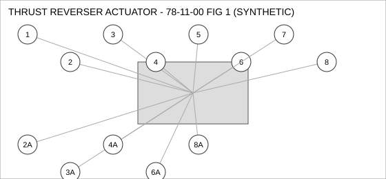
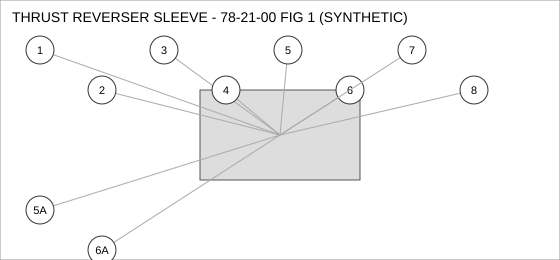
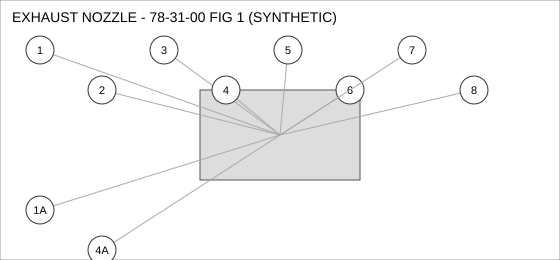
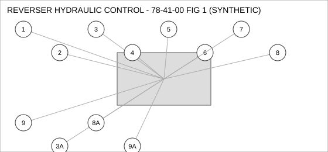

Document type: IPC | Revision: 15 | Fleet: B737
| CODE | AIRCRAFT |
|---|---|
| A | 737-700 |
| B | 737-800 |
| C | 737-MAX8 |

| FIG ITEM | PART NUMBER | NOMENCLATURE | EFFECT | UPA |
|---|---|---|---|---|
| 1 | 60-49107-15 | SENSOR - PRESSURE, THRUST REVERSER ACTUATOR | ALL | 4 |
| 2 | 65-42441-15 | SEAL - O-RING, THRUST REVERSER ACTUATOR | ALL | 1 |
| 2A | 285-38972-14 | SEAL - O-RING, THRUST REVERSER ACTUATOR | B C | 1 |
| INTERCHANGEABLE WITH 65-42441-15 - 737-800, 737-MAX8 ONLY. | ||||
| 3 | 60-14222-26 | GASKET, THRUST REVERSER ACTUATOR | ALL | 2 |
| 3A | 65-92050-22 | GASKET, THRUST REVERSER ACTUATOR | B C | 2 |
| INTERCHANGEABLE WITH 60-14222-26 - 737-800, 737-MAX8 ONLY. | ||||
| 4 | 60-41544-07 | SWITCH - PRESSURE, THRUST REVERSER ACTUATOR | A B | 1 |
| SUPERSEDED BY 162-78742-11 | ||||
| 4A | 162-78742-11 | SWITCH - PRESSURE, THRUST REVERSER ACTUATOR | A B | 1 |
| REPLACES 60-41544-07. THIS PART MAY REPLACE 60-41544-07; 60-41544-07 MAY NOT BE USED TO REPLACE THIS PART. | ||||
| 5 | 162-88352-22 | WASHER - LOCK, THRUST REVERSER ACTUATOR | ALL | 1 |
| 6 | 162-67535-08 | FILTER ELEMENT, THRUST REVERSER ACTUATOR | C | 4 |
| 6A | 285-72065-08 | FILTER ELEMENT, THRUST REVERSER ACTUATOR | C | 4 |
| INTERCHANGEABLE WITH 162-67535-08 (TWO-WAY). | ||||
| 7 | 60-28367-17 | CLAMP - V-BAND, THRUST REVERSER ACTUATOR | A B | 1 |
| 8 | 285-51799-19 | CONNECTOR - ELECTRICAL, THRUST REVERSER ACTUATOR | A B | 4 |
| SUPERSEDED BY 60-83713-14 | ||||
| 8A | 60-83713-14 | CONNECTOR - ELECTRICAL, THRUST REVERSER ACTUATOR | A B | 4 |
| SUPERSEDES 285-51799-19. 285-51799-19 IS NOT INTERCHANGEABLE WITH THIS PART (ONE-WAY). | ||||

| FIG ITEM | PART NUMBER | NOMENCLATURE | EFFECT | UPA |
|---|---|---|---|---|
| 1 | 65-16755-09 | CLAMP - V-BAND, THRUST REVERSER SLEEVE | ALL | 2 |
| 2 | 60-19539-07 | BRACKET - MOUNTING, THRUST REVERSER SLEEVE | C | 4 |
| 3 | 65-72835-07 | SEAL - FLANGE, THRUST REVERSER SLEEVE | C | 1 |
| 4 | 60-37762-07 | ACTUATOR - LINEAR, THRUST REVERSER SLEEVE | A | 1 |
| 5 | 162-41797-23 | SENSOR - TEMPERATURE, THRUST REVERSER SLEEVE | A | 4 |
| 5A | 69-82523-19 | SENSOR - TEMPERATURE, THRUST REVERSER SLEEVE | A | 4 |
| INTERCHANGEABLE WITH 162-41797-23 (TWO-WAY). | ||||
| 6 | 65-82362-11 | BOLT, THRUST REVERSER SLEEVE | ALL | 1 |
| 6A | 65-59786-19 | BOLT, THRUST REVERSER SLEEVE | ALL | 1 |
| INTERCHANGEABLE WITH 65-82362-11 (TWO-WAY). | ||||
| 7 | 69-50425-09 | PUMP - TRANSFER, THRUST REVERSER SLEEVE | ALL | 1 |
| 8 | 162-22924-26 | VALVE - SHUTOFF, THRUST REVERSER SLEEVE | B C | 2 |

| FIG ITEM | PART NUMBER | NOMENCLATURE | EFFECT | UPA |
|---|---|---|---|---|
| 1 | 162-34123-29 | BRACKET - MOUNTING, EXHAUST NOZZLE | C | 4 |
| 1A | 69-56457-09 | BRACKET - MOUNTING, EXHAUST NOZZLE | C | 4 |
| INTERCHANGEABLE WITH 162-34123-29 WHEN SB 78-1042 IS EMBODIED. | ||||
| 2 | 285-14433-27 | NUT - SELF-LOCKING, EXHAUST NOZZLE | A | 1 |
| 3 | 60-64053-05 | SOLENOID, EXHAUST NOZZLE | ALL | 1 |
| 4 | 60-38668-17 | BOLT, EXHAUST NOZZLE | C | 2 |
| 4A | 69-99658-27 | BOLT, EXHAUST NOZZLE | C | 2 |
| ALTERNATE FOR 60-38668-17 AFTER INCORPORATION OF SB 78-1042. | ||||
| 5 | 285-73334-22 | SEAL - O-RING, EXHAUST NOZZLE | ALL | 2 |
| 6 | 285-63914-01 | PUMP - TRANSFER, EXHAUST NOZZLE | ALL | 1 |
| 7 | 285-47576-01 | GASKET, EXHAUST NOZZLE | C | 4 |
| 8 | 65-24026-04 | SENSOR - TEMPERATURE, EXHAUST NOZZLE | C | 4 |

| FIG ITEM | PART NUMBER | NOMENCLATURE | EFFECT | UPA |
|---|---|---|---|---|
| 1 | 285-72324-09 | SEAL - O-RING, REVERSER HYDRAULIC CONTROL | B C | 1 |
| 2 | 69-81176-19 | SENSOR - TEMPERATURE, REVERSER HYDRAULIC CONTROL | C | 1 |
| 3 | 69-12052-07 | NUT - SELF-LOCKING, REVERSER HYDRAULIC CONTROL | B C | 4 |
| 3A | 65-19634-03 | NUT - SELF-LOCKING, REVERSER HYDRAULIC CONTROL | B C | 4 |
| INTERCHANGEABLE WITH 69-12052-07 WHEN SB 78-2217 IS EMBODIED. | ||||
| 4 | 162-20084-10 | CONNECTOR - ELECTRICAL, REVERSER HYDRAULIC CONTROL | A B | 1 |
| 5 | 162-98740-29 | ACTUATOR - LINEAR, REVERSER HYDRAULIC CONTROL | ALL | 4 |
| 6 | 65-20279-17 | SENSOR - PRESSURE, REVERSER HYDRAULIC CONTROL | ALL | 1 |
| 7 | 65-19963-11 | VALVE - SHUTOFF, REVERSER HYDRAULIC CONTROL | ALL | 4 |
| 8 | 162-52778-01 | WASHER - LOCK, REVERSER HYDRAULIC CONTROL | A | 1 |
| 8A | 69-68292-12 | WASHER - LOCK, REVERSER HYDRAULIC CONTROL | A | 1 |
| ALTERNATE FOR 162-52778-01. PARTS ARE INTERCHANGEABLE. | ||||
| 9 | 69-82487-13 | BOLT, REVERSER HYDRAULIC CONTROL | ALL | 2 |
| 9A | 162-83005-18 | BOLT, REVERSER HYDRAULIC CONTROL | ALL | 2 |
| INTERCHANGEABLE WITH 69-82487-13 (TWO-WAY). | ||||